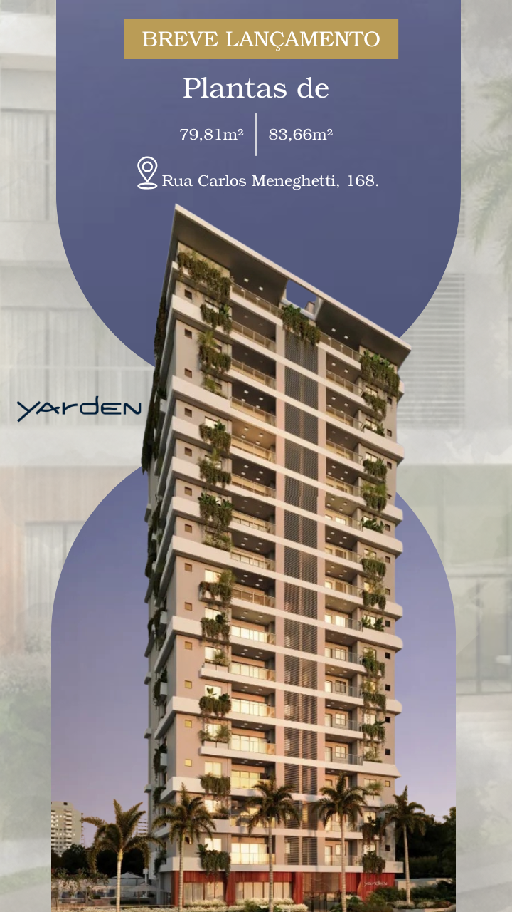

Axis
Campanha desenvolvida para apresentar um empreendimento de alto padrão, explorando localização, arquitetura, acabamentos e diferenciais do projeto por meio de uma sequência de peças para redes sociais.


Atuo no desenvolvimento de materiais gráficos para campanhas, redes sociais e comunicação institucional, criando peças que fortalecem a identidade das marcas e tornam a comunicação mais estratégica.
Atualmente desenvolvo principalmente projetos para o segmento institucional e imobiliário, produzindo materiais digitais e impressos sempre alinhados ao posicionamento de cada empresa.
Projetos desenvolvidos para campanhas de divulgação e tráfego pago, com foco em apresentar empreendimentos, destacar diferenciais e fortalecer a comunicação comercial através de uma sequência de peças.
Campanha desenvolvida para apresentar um empreendimento de alto padrão, explorando localização, arquitetura, acabamentos e diferenciais do projeto por meio de uma sequência de peças para redes sociais.


Sequência de peças desenvolvidas para campanha de tráfego pago voltada ao segmento residencial, utilizando uma comunicação objetiva para apresentar os principais benefícios do empreendimento.
Campanha criada para divulgação digital do empreendimento, com peças organizadas em formato de carrossel para conduzir o público durante toda a apresentação do projeto.


Materiais desenvolvidos para manter uma comunicação constante nas redes sociais, acompanhando lançamentos, apresentando empreendimentos e fortalecendo o posicionamento digital das marcas.


Peças desenvolvidas para complementar campanhas, fortalecer lançamentos e manter uma comunicação dinâmica com o público nas redes sociais.



Cada material apresentado neste portfólio foi desenvolvido considerando identidade visual, objetivos comerciais e estratégias de comunicação específicas para cada projeto. Além das peças para redes sociais, também atuo com diagramação editorial, materiais impressos, adaptação de arquivos gráficos e comunicação institucional. Este portfólio é atualizado continuamente conforme novos projetos são desenvolvidos.